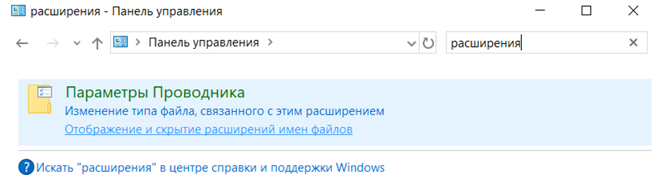
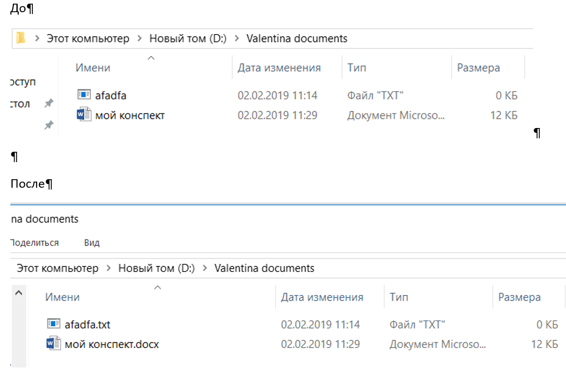
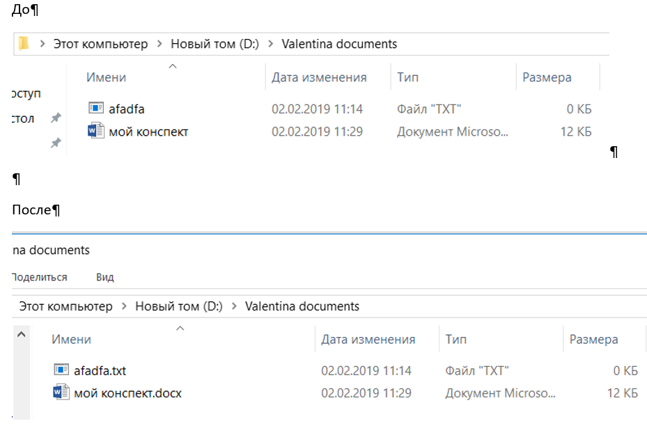

Имена и расширения файлов
Панель управления
 

Если нужно написать одинаковые символы или знаки в столбик, но не хочется каждый раз повторять одно и то же, то ставим курсор в начало строки нажимаем клавишу Alt и тащим вниз (вверх) настолько, насколько нужно, отпускаем и печатаем то, что необходимо!
Git
Как в командной строке перейти с одного диска на другой
Для того, чтобы пререйти с одного диска на другой(например с диска C на диск D)
нужно напечатать следующее:
cd /d d:(название папки).
Выглядеть это должно примерно так:
C:\Users\DELL>cd /d d:\Pascal\NotSchool\

Переход внутри одного логичесуго диска
cd - change directory
cd /d - change directory c переходом на другой логический диск.
Как запуститть компилятор Pascal ABC в командной строке
- Зайти в нужную папку в командной строке. Например:
C:\Users>cd "C:\Program Files (x86)\PascalABC.NET" - Скопировать имя программы с расширением! Обязательно указать какой компилятор мы используем(в данном случае это pabcnetc)!
(зайти в папку с файлом, в адресной строке
поставить курсор и нажать правой кнопкой мыши
одновременно с клавишей Shift, появится расширенное контекстное меню, выбрать "копировать как путь" и вставить в командную строку,
просто щелкнув правой кнопкой мыши). Примерно так:
C:\Program Files (x86)\PascalABC.NET>pabcnetc hello.pas - Запустить прогрaмму. Примерно так:
C:\Program Files (x86)\PascalABC.NET>hello
Hello World by pascal
Как запуститть компилятор javac в командной строке
- Зайти в нужную папку на нужный диск! Например:
C:\Program Files (x86)\PascalABC.NET>cd /d "D:\java_programming\commandline" - Написать имя программы с раширением! Обязательно указать какой компилятор мы используем(в данном случае это javac)!
Например:
D:\java_programming\commandline>javac HelloWorld.java - Запустить программу.НО!!! Обязательно перед именем программы указать, что эта программа java! Примерно так:
D:\java_programming\commandline>java HelloWorld
Hello world by Java!